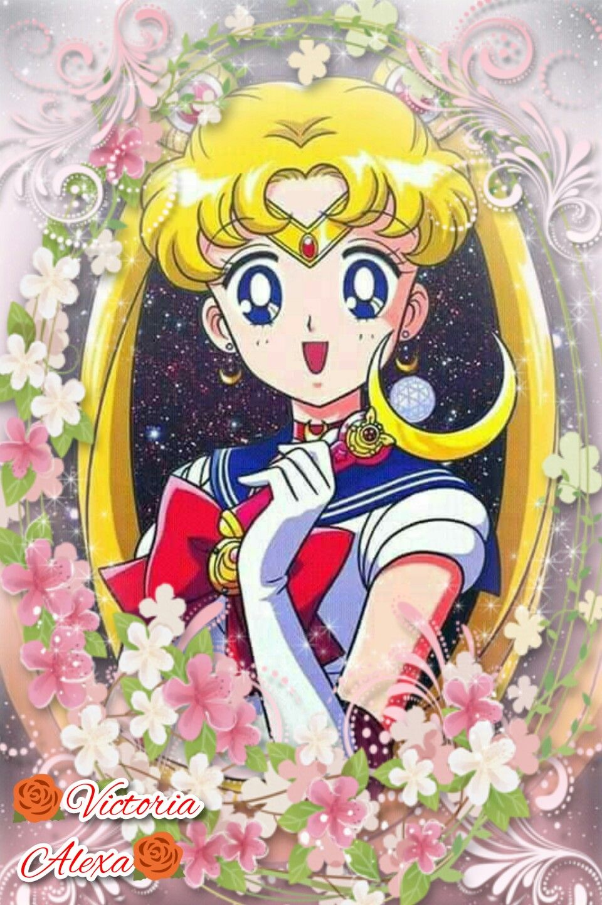

Sailor Moon
Sailor Moon conta a história de Usagi Tsukino, encontra Luna, uma gata falante que revela a identidade de Usagi como "Sailor Moon", uma guerreira mágica destinada a salvar a Terra das forças do mal.

Hello Kitty
é uma personagem criada pela empresa japonesa Sanrio retrata Hello Kitty como uma jovem gijinka (antropomorfização) de um Bobtail Japonês com um laço vermelho e, notavelmente, sem boca.